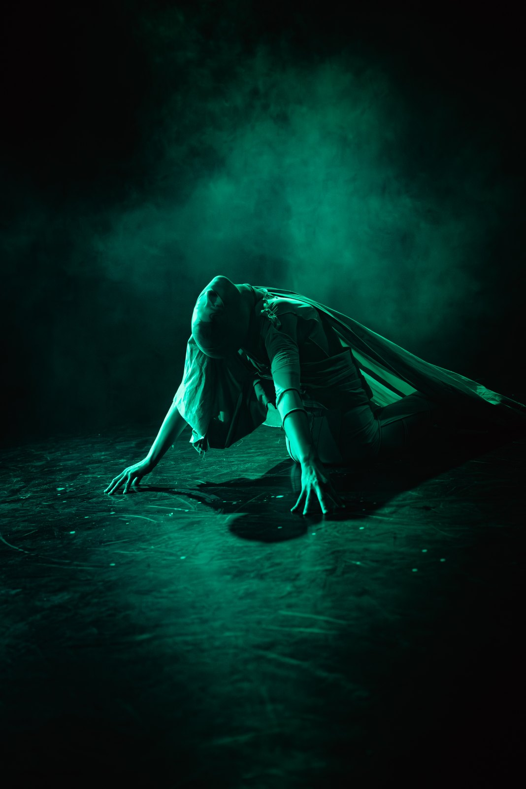

1 / 10
The title of this piece – LNX– is an acronym to Lil Nas X.
Its first name was a different one, Closing {Panorama}
We were in the studio, my sound engineer and I, when I got the news of Lis Nas X’s incarceration
The piece has a prologue followed by three stages.
Dramaturgically I am not so sure about the stages but I decided for four light modes:
Prologue (warm light + static searchlight)
1 green
2 blue
3 white, flood light (Putzlicht)
Costume: G3 & Victoria Vau

Continue exploring
All projects ↗